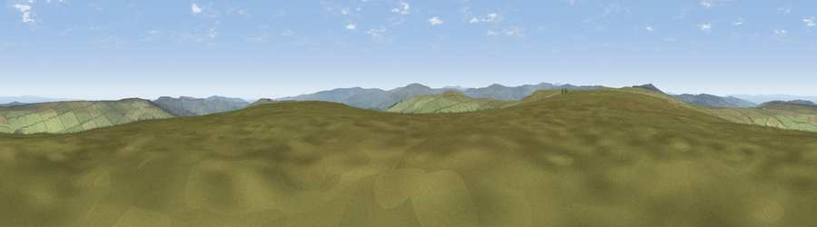

Viewpoint near Allenheads
#11441 in England · top 33% of its area beats it · near Allenheads · open accessWhere it is
The exact computed spot (NY 88025 43025). Click the marker for map links.
Public access: this spot lies on mapped open-access land (CRoW Act 2000) — you may roam here on foot. Computed from Natural England's CRoW access layer and OpenStreetMap rights of way — not the legal definitive map. Always verify locally.
The view, rendered

A 360° render of this exact spot computed from the terrain model, tree cover and land cover — summer colours, afternoon light, calibrated against photographs of famous viewpoints. Real trees, hedges and buildings will differ in detail.
The panorama
Grey silhouette: terrain skyline in each direction (720 bearings, Earth curvature and refraction included). Dashed green: skyline with trees (+15 m) and buildings (+8 m) as obstacles. Blue strip: how far the ground is visible on each bearing.
Where the view opens
Wedge length = distance to the farthest visible ground on that bearing (vegetation-aware). Rings at 10, 25 and 50 km.
What fills the view
98% grassland · 1% woodland
Angular shares of the visible panorama (visual magnitude), not map area. Landscape diversity 0.04 (0–1 Shannon).
Key numbers
More beautiful places nearby
The staircase of upgrades: each row has a higher view potential than everything closer. Driving times are estimates from straight-line distance, calibrated against real road routing — check an actual route before setting out.
| Place | Direction | Drive | Score |
|---|---|---|---|
| Middlehope Moor | W · 2 km | ~5 min | 62.4 |
| Dry Rigg | ENE · 4 km | ~9 min | 65.2 |
| Viewpoint near Allenheads | W · 4 km | ~9 min | 67.6 |
| Viewpoint near Allenheads | WNW · 6 km | ~13 min | 74.6 |
| Mickle Fell | SSW · 20 km | ~34 min | 75.8 |
| Great Dun Fell | WSW · 20 km | ~34 min | 77.8 |
| Little Dun Fell | WSW · 20 km | ~34 min | 78.4 |
| Cross Fell | WSW · 21 km | ~36 min | 78.7 |
54.78199, -2.18771 · source: screening · position refined by local search. Computed location — check access rights before visiting.